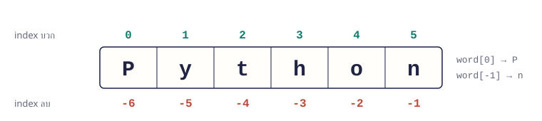

จบบทนี้แล้วทำได้ เข้าถึงตัวอักษรด้วย index ตัดข้อความด้วย slicing และใช้ method ทำความสะอาด/แยก/ประกอบข้อความ
เนื้อหา
06.1 index: ตำแหน่งของตัวอักษร ตัวอักษรแต่ละตัวมีเลขตำแหน่งเริ่มที่ 0 จากซ้าย และนับถอยหลังได้ด้วยเลขติดลบ (-1 คือตัวสุดท้าย) len() บอกความยาวของข้อความ

ข้อความ Python: index บวก 0 ถึง 5 จากซ้าย และ index ลบ -6 ถึง -1 จากขวา word = "Python"
print(word[0], word[5])
print(word[-1], word[-2])
print(len(word))P n
n o
6 06.2 slicing: ตัดบางส่วน text[start:stop] ตัดตั้งแต่ตำแหน่ง start ถึงก่อน stop (ไม่รวม stop) ละเว้น start หรือ stop ได้
เขียน ได้ ความหมาย word[0:2]Pyตำแหน่ง 0 ถึง 1 word[2:]thonตั้งแต่ 2 จนจบ word[:3]Pyt3 ตัวแรก word[-3:]hon3 ตัวท้าย word[::-1]nohtyPกลับหลัง
06.3 method ที่ใช้บ่อย string มีคำสั่งในตัว (method) เรียกด้วยจุด เช่น name.upper() method จะคืนข้อความใหม่ ข้อความเดิมไม่เปลี่ยน ต้องเก็บผลไว้ในตัวแปร
method ตัวอย่าง ผล upper() / lower()"Hi".upper()"HI"strip()" hi ".strip()"hi" (ตัดช่องว่างหัวท้าย)replace(a, b)"a-b".replace("-", "+")"a+b"split(sep)"a,b,c".split(",")["a", "b", "c"]sep.join(list)"-".join(["a", "b"])"a-b"find(x)"hello".find("l")2 (ไม่เจอได้ -1)startswith(x)"CS101".startswith("CS")Truecount(x)"banana".count("a")3
name = " nina SUWAN "
clean = name.strip().title()
print(clean)
print(name) # ข้อความเดิมไม่เปลี่ยนNina Suwan
nina SUWAN 06.4 ตรวจและวนข้อความ ใช้ in ตรวจว่ามีข้อความย่อยอยู่หรือไม่ และใช้ for วนทีละตัวอักษรได้
email = "mali@example.com"
print("@" in email)
vowels = 0
for ch in "programming":
if ch in "aeiou":
vowels += 1
print("สระ", vowels, "ตัว")True
สระ 3 ตัว ตัวอย่างโปรแกรม
ตัวอย่าง 06.1 · จัดรูปชื่อให้เรียบร้อย
ทำความสะอาดข้อความที่ผู้ใช้พิมพ์มาไม่เรียบร้อย แล้วสร้างชื่อย่อ
Python source raw = input("ชื่อ-นามสกุล: ")
parts = raw.split()
first = parts[0].title()
last = parts[1].title()
print(f"ชื่อเต็ม: {first} {last}")
print(f"ชื่อย่อ: {first[0]}.{last[0]}.")
print(f"username: {first.lower()}.{last[:3].lower()}")Output · ค่าที่ผู้ใช้พิมพ์แสดงต่อท้ายคำถาม ชื่อ-นามสกุล: nina SUWAN
ชื่อเต็ม: Nina Suwan
ชื่อย่อ: N.S.
username: nina.suw
อธิบาย split() แบบไม่ใส่ตัวคั่นจะตัดช่องว่างทุกแบบออก ได้ list ของคำtitle() ทำให้ตัวแรกเป็นตัวใหญ่ ที่เหลือเป็นตัวเล็กfirst[0] คือตัวอักษรแรก ส่วน last[:3] คือ 3 ตัวแรก
ตัวอย่าง 06.2 · แยกอีเมล
หาตำแหน่ง @ แล้วตัดส่วนหน้าและส่วนหลัง
Python source email = input("อีเมล: ").strip().lower()
at = email.find("@")
if at == -1:
print("อีเมลไม่ถูกต้อง")
else:
print("ชื่อผู้ใช้:", email[:at])
print("โดเมน:", email[at + 1:])Output · ค่าที่ผู้ใช้พิมพ์แสดงต่อท้ายคำถาม อีเมล: mali.s@student.ac.th
ชื่อผู้ใช้: mali.s
โดเมน: student.ac.th
อธิบาย find("@") คืนตำแหน่งของ @ ถ้าไม่เจอคืน -1email[:at] ตัดถึงก่อน @ และ email[at + 1:] เริ่มหลัง @ตรวจ -1 ก่อนเสมอ เพื่อรับมือข้อความที่ไม่ใช่อีเมล
แบบฝึกหัดท้ายบท
เรียงจากง่ายไปยาก ลองเขียนเองให้ได้ output ตรงตัวอย่างก่อน แล้วค่อยเปิดเฉลย
ข้อ 06.1 ตัวแรกและตัวสุดท้าย ★ ง่าย รับคำหนึ่งคำ แล้วแสดงตัวอักษรตัวแรก ตัวสุดท้าย และความยาว
เข้าใจโจทย์
โจทย์ให้ คำ เช่น Bangkok
ต้องหา ตัวแรก B ตัวสุดท้าย k ยาว 7 ตัวอักษรวิธีคิด
ตัวแรกคือ [0] ตัวสุดท้ายคือ [-1] ความยาวใช้ len() ตัวอย่างผลลัพธ์ คำ: Bangkok
ตัวแรก B ตัวสุดท้าย k ยาว 7 ตัวอักษร
🔒 ใส่รหัสเพื่อดูเฉลย
แนวคำตอบและเหตุผล
index ติดลบช่วยให้ไม่ต้องคำนวณ len(word) - 1 เอง
word = input("คำ: ")
print(f"ตัวแรก {word[0]} ตัวสุดท้าย {word[-1]} ยาว {len(word)} ตัวอักษร")
ข้อ 06.2 palindrome ★ ง่าย ตรวจว่าคำที่พิมพ์อ่านกลับหลังแล้วเหมือนเดิมหรือไม่ (ไม่สนตัวพิมพ์เล็ก/ใหญ่)
เข้าใจโจทย์
โจทย์ให้ คำ เช่น Level
ต้องหา Level อ่านกลับหลังได้เหมือนเดิม: Trueวิธีคิด
แปลงเป็นตัวพิมพ์เล็กด้วย lower() กลับหลังด้วย [::-1] เทียบด้วย == ตัวอย่างผลลัพธ์ คำ: Level
Level อ่านกลับหลังได้เหมือนเดิม: True
🔒 ใส่รหัสเพื่อดูเฉลย
แนวคำตอบและเหตุผล
ถ้าไม่แปลงเป็นตัวเล็กก่อน Level กับ leveL จะไม่เท่ากัน
word = input("คำ: ")
clean = word.lower()
print(f"{word} อ่านกลับหลังได้เหมือนเดิม: {clean == clean[::-1]}")
ข้อ 06.3 นับสระ ★★ ปานกลาง รับประโยคภาษาอังกฤษ แล้วนับจำนวนสระ a, e, i, o, u (ทั้งตัวเล็กและตัวใหญ่)
เข้าใจโจทย์
โจทย์ให้ ประโยค เช่น Python Is Fun
ต้องหา มีสระ 3 ตัววิธีคิด
แปลงเป็นตัวเล็กก่อน วนทีละตัวอักษร ตรวจด้วย ch in "aeiou" แล้วนับ ตัวอย่างผลลัพธ์ ประโยค: Python Is Fun
มีสระ 3 ตัว
🔒 ใส่รหัสเพื่อดูเฉลย
แนวคำตอบและเหตุผล
in กับข้อความใช้ตรวจว่าตัวอักษรอยู่ในกลุ่มที่สนใจหรือไม่ สั้นกว่าเขียน or 5 ครั้ง
text = input("ประโยค: ").lower()
count = 0
for ch in text:
if ch in "aeiou":
count += 1
print(f"มีสระ {count} ตัว")
ข้อ 06.4 ทำ slug สำหรับ URL ★★ ปานกลาง แปลงหัวข้อบทความเป็น slug: ตัดช่องว่างหัวท้าย เป็นตัวเล็ก และเชื่อมคำด้วย -
เข้าใจโจทย์
โจทย์ให้ หัวข้อ เช่น Learn Python Basics
ต้องหา learn-python-basicsวิธีคิด
lower() ทำเป็นตัวเล็กsplit() แยกคำ (ช่องว่างซ้ำหายไปเอง)"-".join(...) เชื่อมคำตัวอย่างผลลัพธ์ หัวข้อ: Learn Python Basics
learn-python-basics
🔒 ใส่รหัสเพื่อดูเฉลย
แนวคำตอบและเหตุผล
split() แบบไม่ใส่ตัวคั่นจัดการช่องว่างหัวท้ายและช่องว่างซ้ำให้ทั้งหมด จึงไม่ต้อง strip() แยก
title = input("หัวข้อ: ")
slug = "-".join(title.lower().split())
print(slug)
ข้อ 06.5 ซ่อนเบอร์โทร ★★★ ท้าทาย รับเบอร์โทร 10 หลัก (อาจมีขีด) แล้วแสดงแบบซ่อน เหลือเฉพาะ 4 ตัวท้าย
เข้าใจโจทย์
โจทย์ให้ เบอร์ เช่น 081-234-5678
ต้องหา ******5678วิธีคิด
ลบขีดด้วย replace("-", "") ตรวจว่ายาว 10 ตัวและเป็นตัวเลขทั้งหมดด้วย isdigit() สร้าง "*" * 6 ต่อด้วย 4 ตัวท้าย [-4:] ตัวอย่างผลลัพธ์ เบอร์โทร: 081-234-5678
******5678
🔒 ใส่รหัสเพื่อดูเฉลย
แนวคำตอบและเหตุผล
ทำความสะอาดข้อมูลก่อน (ลบขีด) แล้วตรวจรูปแบบ ค่อยจัดรูปผลลัพธ์ เป็นลำดับที่ใช้ได้กับข้อมูลจากผู้ใช้ทุกแบบ
phone = input("เบอร์โทร: ").replace("-", "")
if len(phone) == 10 and phone.isdigit():
print("*" * 6 + phone[-4:])
else:
print("เบอร์โทรไม่ถูกต้อง")
ข้อ 06.6 นับคำในประโยค ★★★ ท้าทาย รับประโยค แล้วแสดงจำนวนคำ คำที่ยาวที่สุด และประโยคที่ขึ้นต้นแต่ละคำด้วยตัวใหญ่
เข้าใจโจทย์
โจทย์ให้ ประโยค เช่น python makes programming fun
ต้องหา จำนวนคำ 4, คำยาวสุด programming, และ Python Makes Programming Fun วิธีคิด
split() ได้ list ของคำ แล้ว len() นับวนหาคำที่ len() มากที่สุด title() ทำตัวแรกของทุกคำเป็นตัวใหญ่ตัวอย่างผลลัพธ์ ประโยค: python makes programming fun
จำนวนคำ: 4
คำยาวสุด: programming
Python Makes Programming Fun
🔒 ใส่รหัสเพื่อดูเฉลย
แนวคำตอบและเหตุผล
เริ่ม longest เป็นข้อความว่าง (ยาว 0) คำแรกจึงถูกเก็บเสมอ แล้วแทนที่เมื่อเจอคำที่ยาวกว่า
sentence = input("ประโยค: ")
words = sentence.split()
longest = ""
for word in words:
if len(word) > len(longest):
longest = word
print("จำนวนคำ:", len(words))
print("คำยาวสุด:", longest)
print(sentence.title())